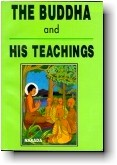
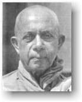

| BuddhaSasana Home Page | English Section |
|  |
THE BUDDHA AND HIS TEACHINGS Venerable Nārada Mahāthera Reprinted for free distribution by |
 |
-ooOoo- Namo Tassa Bhagavato
Arahato Sammā-Sambuddhassa INTRODUCTION M any valuable books have been written by Eastern and Western scholars, Buddhists and non-Buddhists alike, to present the life and teachings of the Buddha to those who are interested in Buddhism.Amongst them one of the most popular works is still The Light of Asia by Sir Edwin Arnold. Many Western truth-seekers were attracted to Buddhism by this world-famous poem. Congratulations of Eastern and Western Buddhists are due to the learned writers on their laudable efforts to enlighten the readers on the Buddha-Dhamma. This new treatise is another humble attempt made by a member of the Order of the Sangha, based on the Pāli Texts, commentaries, and traditions prevailing in Buddhist countries, especially in Ceylon. The first part of the book deals with the Life of the Buddha, thc second with the Dhamma, the Pāli term for His Doctrine. * The Buddha-Dhamma is a moral and philosophical system which expounds a unique path of Enlightenment, and is not a subject to be studied from a mere academic standpoint. The Doctrine is certainly to be studied, more to be practised, and above all to be realized by oneself. Mere learning is of no avail without actual practice. The learned man who does not practise the Dhamma, the Buddha says, is like a colourful flower without scent. He who does not study the Dhamma is like a blind man. But, he who does not practise the Dhamma is comparable to a library. * There are some hasty critics who denounce Buddhism as a passive and inactive religion. This unwarranted criticism is far from the truth. The Buddha was the first most active missionary in the world. He wandered from place to place for forty-five years preaching His doctrine to the masses and the intelligentsia. Till His last moment, He served humanity both by example and by precept. His distinguished disciples followed suit, penniless, they even travelled to distant lands to propagate the Dhamma, expecting nothing in return. "Strive on with diligence" were the last words of the Buddha. No emancipation or purification can be gained without personal striving. As such petitional or intercessory prayers are denounced in Buddhism and in their stead is meditation which leads to self-control, purification, and enlightenment. Both meditation and service form salient characteristics of Buddhism. In fact, all Buddhist nations grew up in the cradle of Buddhism. "Do no evil", that is, be not a curse to oneself and others, was the Buddha's first advice. This was followed by His second admonition – "Do good", that is, be a blessing to oneself and others. His final exhortation was – "Purify one's mind" -- which was the most important and the most essential. Can such a religion be termed inactive and passive? It may be mentioned that, amongst the thirty-seven factors that lead to enlightenment (Bodhipakkhiya-Dhamma), viriya or energy occurs nine times. Clarifying His relationship with His followers, the Buddha states: "You yourselves should make the exertion. The Buddhas indicate the path and it is left for us to follow that path to obtain our purification. Self-exertion plays an important part in Buddhism. "By oneself is one purified; by oneself is one defiled." * Bound by rules and regulations, Bhikkhus can be active in their own fields without trespassing their limits, while lay followers can serve their religion, country and the world in their own way, guided by their Buddhist principles. Buddhism offers one way of life to Bhikkhus and another to lay followers. In one sense all Buddhists are courageous warriors. They do fight, but not with weapons and bombs. They do kill, but not innocent men, women and children. With whom and with what do they fight? Whom do they mercilessly kill? They fight with themselves, for man is the worst enemy of man. Mind is his worst foe and best friend. Ruthlessly they kill the passions of lust, hatred and ignorance that reside in this mind by morality, concentration and wisdom. Those who prefer to battle with passions alone in solitude are perfectly free to do so. Bhikkhus who live in seclusion are noteworthy examples. To those contended ones, solitude is happiness. Those who seek delight in battling with life's problems living in the world and thus make a happy world where men can live as ideal citizens in perfect peace and harmony, can adopt that responsibility and that arduous course. Man is not meant for Buddhism. But Buddhism is meant for man. * According to Buddhism, it should be stated that neither wealth nor poverty, if rightly viewed, can be an obstacle towards being an ideal Buddhist. Anāthapindika, the Buddha's best supporter, was a millionaire. Ghatikāra, who was regarded even better than a king, was a penniless potter. As Buddhism appeals to both the rich and the poor it appeals equally to the masses and the intelligentsia. The common folk are attracted by the devotional side of Buddhism and its simpler ethics while the intellectuals are fascinated by the deeper teachings and mental culture. A casual visitor to a Buddhist country, who enters a Buddhist temple for the first time, might get the wrong impression that Buddhism is confined to rites and ceremonies and is a superstitious religion which countenances worship of images and trees. Buddhism, being tolerant, does not totally denounce such external forms of reverence as they are necessary for the masses. One can see with what devotion they perform such religious ceremonies. Their faith is increased thereby. Buddhists kneel before the image and pay their respects to what that image represents. Understanding Buddhists reflect on the virtues of the Buddha. They seek not worldly or spiritual favours from the image. The Bodhi-tree, on the other hand, is the symbol of enlightenment. What the Buddha expects from His adherents are not these forms of obeisance but the actual observance of His Teachings. "He who practises my teaching best, reveres me most", is the advice of the Buddha. An understanding Buddhist can practise the Dhamma without external forms of homage. To follow the Noble Eightfold Path neither temples nor images are absolutely necessary. * Is it correct to say that Buddhism is absolutely otherworldly although Buddhism posits a series of past and future lives and an indefinite number of habitable planes? The object of the Buddha's mission was to deliver beings from suffering by eradicating its cause and to teach a way to put an end to both birth and death if one wishes to do so. Incidentally, however, the Buddha has expounded discourses which tend to worldly progress. Both material and spiritual progress are essential for the development of a nation. One should not be separated from the other, nor should material progress be achieved by sacrificing spiritual progress as is to be witnessed today amongst materialistic-minded nations in the world. It is the duty of respective Governments and philanthropic bodies to cater for the material development of the people and provide congenial conditions, while religions like Buddhism, in particular, cater for the moral advancement to make people ideal citizens. Buddhism goes counter to most religions in striking the Middle Way and in making its Teaching homo-centric in contradistinction to theo-centric creeds. As such Buddhism is introvert and is concerned with individual emancipation. The Dhamma has to be realized by oneself (sanditthiko). * As a rule, the expected ultimate goal of the majority of mankind is either nihilism or eternalism. Materialists believe in complete annihilation after death. According to some religions the goal is to be achieved in an after-life, in eternal union either with an Almighty Being or an inexplicable force which, in other words, is one form of eternalism. * Buddhism advocates the middle path. Its goal is neither nihilism, for there is nothing permanent to annihilate nor eternalism, for there is no permanent soul to eternalize. The Buddhist goal can be achieved in this life itself. * What happens to the Arahant after death? This is a subtle and difficult question to be answered as Nibbāna is a supramundane state that cannot be expressed by words and is beyond space and time. Strictly speaking, there exists a Nibbāna but no person to attain Nibbāna. The Buddha says it is not right to state that an Arahant exists nor does not exist after death. If, for instance, a fire burns and is extinguished, one cannot say that it went to any of the four directions. When no more fuel is added, it ceases to burn. The Buddha cites this illustration of fire and adds that the question is wrongly put. One may-be confused. But, it is not surprising. Here is an appropriate illustration by a modern scientist. Robert Oppenheimer writes: "If we ask, for instance, whether the position of the electron remains the same, we must say 'no'; if we ask whether the electron's position changes with time, we must say 'no'; if we ask whether the electron is at rest, we must say 'no'; if we ask whether it is in action, we must say 'no'. "The Buddha had given such answers when interrogated as to the condition of man's self after death, but they are not familiar answers from the tradition of the 17th and 18th century science." Evidently the learned writer is referring to the state of an Arahant after death. What is the use of attaining such a state? Why should we negate existence? Should we not affirm existence for life is full of joy? These are not unexpected questions. They are the typical questions of persons who either desire to enjoy life or to work for humanity, facing responsibilities and undergoing suffering. To the former, a Buddhist would say:-- you may if you like, but be not slaves to worldly pleasures which are fleeting and illusory; whether you like it or not, you will have to reap what you sow. To the latter a Buddhist might say:-- by all means work for the weal of humanity and seek pleasure in altruistic service. Buddhism offers the goal of Nibbāna to those who need it, and is not forced on any. "Come and see", advises the Buddha. * Till the ultimate goal is achieved a Buddhist is expected to lead a noble and useful life. Buddhism possesses an excellent code of morals suitable to both advanced and unadvanced types of individuals. They are: (a) The five Precepts -- not to kill, not to steal, not to commit adultery, not to lie, and not to take intoxicating liquor. (b) The four Sublime States (Brahma-Vihāra): Loving-kindness, compassion, appreciative joy and equanimity. (c) The ten Transcendental virtues (Pāramitā):--generosity, morality, renunciation, wisdom, energy, patience, truthfulness, resolution, loving-kindness, and equanimity. (d) The Noble Eightfold Path: Right understanding, right thoughts, right speech, right action, right livelihood, right effort, right mindfulness and right concentration. Those who aspire to attain Arahantship at the earliest possible opportunity may contemplate on the exhortation given to Venerable Rāhula by the Buddha – namely, "This body is not mine; this am I not; this is not my soul" * It should be humbly stated that this book is not intended for scholars but students who wish to understand the life of the Buddha and His fundamental teachings. The original edition of this book first appeared in 1942. The second one, a revised and enlarged edition with many additions and modifications, was published in Saigon in 1964 with voluntary contributions from my devout Vietnamese supporters. In the present one, I have added two more chapters and an appendix with some important Suttas. It gives me pleasure to state that a Vietnamese translation of this book by Mr. Pham Kim Khanh (Sunanda) was also published in Saigon. In preparing this volume I have made use of the translations of the Pāli Text Society and several works written by Buddhists and non-Buddhists. At times I may have merely echoed their authentic views and even used their appropriate wording. Wherever possible I have acknowledged the source. I am extremely grateful to the late Mr. V. F. Gunaratna who, amidst his multifarious duties as Public Trustee of Ceylon, very carefully revised and edited the whole manuscript with utmost precision and great faith. Though an onerous task, it was a labour of love to him since he was an ideal practising Buddhist, well versed in the Buddha-Dhamma. My thanks are due to generous devotees for their voluntary contributions, to Mrs. Coralie La Brooy and Miss Ranjani Goonetilleke for correcting the proofs and also to the Associated Newspapers of Ceylon Ltd. for printing the book with great care. NĀRADA. -ooOoo- Top | Contents | 01 | 02 | 03 | 04 | 05 | 06 | 07 | 08 | 09 | 10 | 11 | 12 | 13 | 14 | 15 | 16 | 17 | 18 | 19 | 20 | 21 | 22 | 23 | 24 | 25 | 26 | 27 | 28 | 29 | 30 | 31 | 32 | 33 | 34 | 35 | 36 | 37 | 38 | 39 | 40 | 41 | 42 | 43 | 44 |
Sincere thanks to Mr Pham Kim Khanh - Nārada
Center, Seattle, U.S.A.,
for making this digital version available
(Binh Anson, September 2002).
(See also: Vietnamese translation - "Đức Phật và Phật Pháp")
[Back
to English Index]
last updated:
01-09-2002